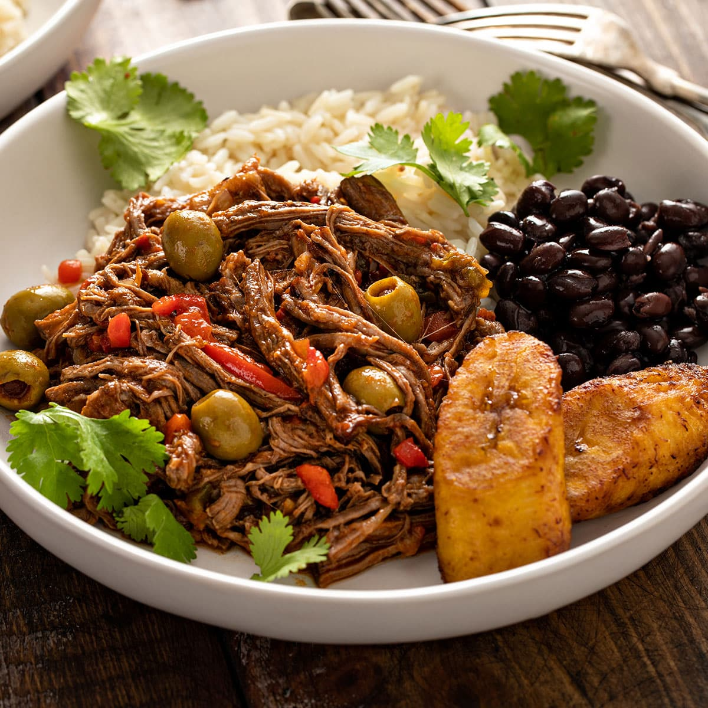

Cuban Ropa Vieja

This ropa vieja is great served on tortillas or over rice. Add sour cream, cheese, and fresh cilantro on the side.
a. 1 tablespoon vegetable oil
b. 2 pounds beef flank steak
d. 1 (8 ounce) can tomato sauce
e. 1 (6 ounce) can tomato paste
f. 1 (6 ounce) can tomato paste
g. 1 (6 ounce) can tomato paste
h. 2 cloves garlic, chopped
i. 1 teaspoon ground cumin
j. 2 teaspoon chopped fresh cilantro
k. 1 tablespoon olive oil
l. 1 tablespoon white vinegar